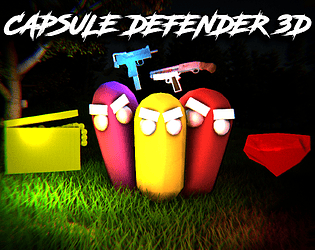

Capsule Defender 3D
This game was made, for once, outside of the Friday Night Game Jam although it is a sequel/spinoff of sorts to the Friday Night Game Jam entry, Capsule Defender. This was my first attempt at developing finished wave survival game, complete with audio, menus and variation in weapons, enemies and more. This game was developed over the course of about a week due to the amount of new skills I had to learn in order to push this game out to the public. This game contains multiple maps, one original and one inspired by Capsule Defender 2D. All assets were created by me ignoring sound effects which I lifted mostly from royalty free sound websites. The weapon models were developed prior to the development or even planning of this game as a part of Blender 3D modelling practice. The webGl version of this game doesn't run incredibly well and the post processing is rather lacking in that version. The windows build is a lot more advanced in terms of post processing and runs a hell of a lot better. This game was partially inspired by the incredibly old Brackeys game, Kill Pill. One thing to mention about the game was the spawning system, I still used the incredibly outdated and predictable method of having an empty GameObject rapidly move around the map via an animator. I used this method in Fish Fetcher too but I suppose I had more of an excuse due to the lack of knowledge I had when developing Fish Fetcher. I had a lot of fun developing this game though.
You can play the game at my itch.io page: bigmemerman1.itch.io